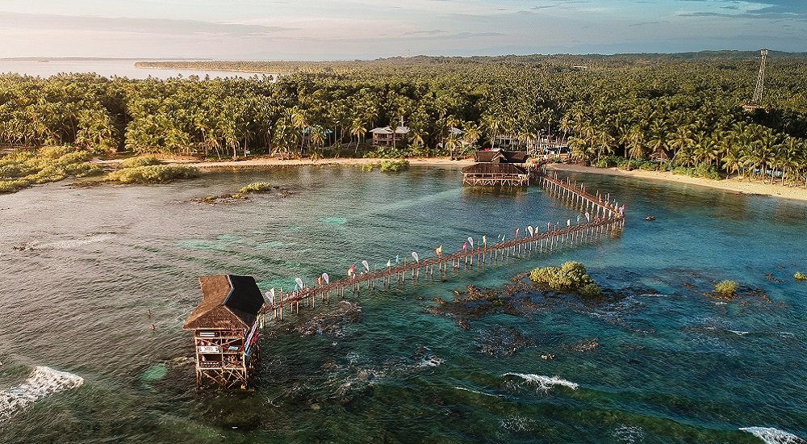
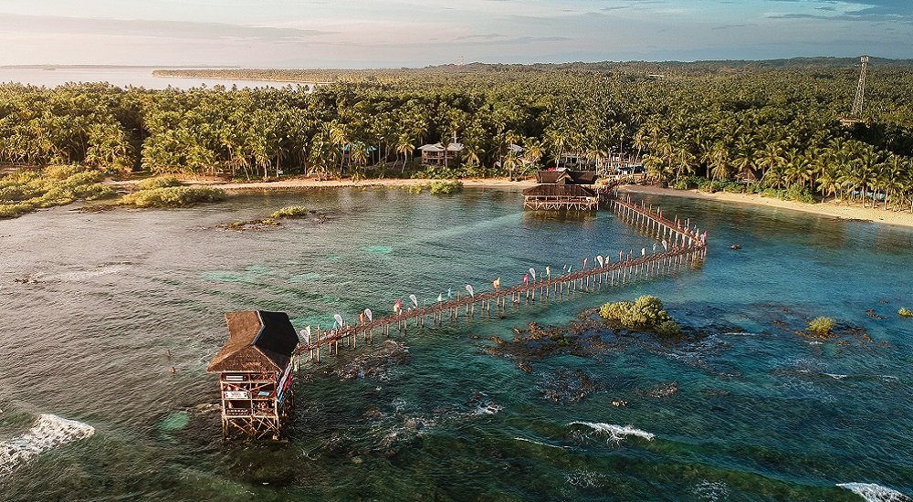

Places to visit in Philippines
"Siargao Island, Philippines"
 

Siargao is an island of nine municipalities in the province of Surigao del Norte. Known as the “Surfing Capital of the Philippines”, Siargao is mainly responsible for introducing surfing to the country. Apart from surfing, Siargao is also open to other activities such as cave explorations and rock climbing. Siargao Island is a tropical paradise located in the Surigao del Norte province of the Philippines. This teardrop-shaped island has grown steadily in popularity over the past few years and is often known as the country’s surfing capital. Visitors come from all over the Philippines and across the globe to experience the world-class surf, white sand beaches, beautiful sunsets, natural rock and cave pools, and smaller neighboring islands. There is something here for every kind of traveler, whether you are looking for excitement or relaxation. Siargao Island is usually accessed through Sayak Airport, which is about a 10-minute drive from the municipality of Del Carmen and a 40-minute drive from the main tourist town of General Luna.
"How to get here"
You can fly to Siargao directly from the main jump-off points in Luzon, the Visayas, and Mindanao – three primary island groups of the Philippine archipelago. You can also choose to fly to Surigao City and then travel via ferry to Siargao Island.
"Other Places to Visit in Philippines"


Echanted River, Surigao Del sur
Enchanted River or the Hinatuan Sacred River. Meandering 648 meters between the Philippine Sea and the Pacific Ocean at Barangay Talisay, Hinatuan, Surigao del Sur, this river is so strikingly clear, that its sapphire blue hues look like solid gemstones glinting in the sun.